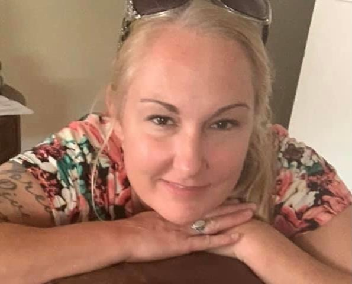

Jobs
Education
About Miranda

It's never too late to reach for a new goal or take a different path!
}
_
- 1979 - Born in Wilmington, Ohio
- 1997 - Graduated from Wilmington High School
- 1998 - Got married and had first child
- 2002 - Had second child
- 2006 - Had twin boys
- 2007 - Took some online college courses in Criminal Justice through Pheonix Univ.
- 2013 - Lost my father
- 2014 - Started working in retail through other companies for Kroger
- 2018 - Started full time with the Kroger company
- 2021 - Started with Kable Academy